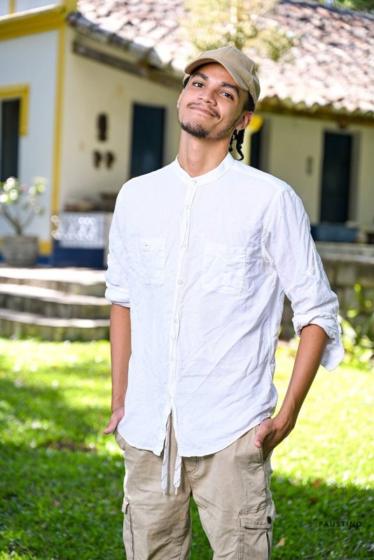

THE ELITE


Sistemas que pensam.
Automações que evoluem.
Liderada por Kayo Melo e Leon Sedov, a Ominus Tech é o ponto de singularidade onde a IA encontra a infraestrutura avançada. Transformamos complexidade em performance absoluta.
Implementamos agentes autônomos que operam em escala global, otimizando fluxos empresariais com precisão cirúrgica.
Arquitetura de sistemas robustos para alta disponibilidade e baixa latência.
Modelos treinados para nichos específicos e análise preditiva.
Extração de inteligência real de grandes volumes de dados para antecipação estratégica de mercado.